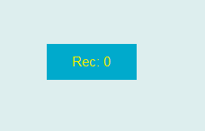
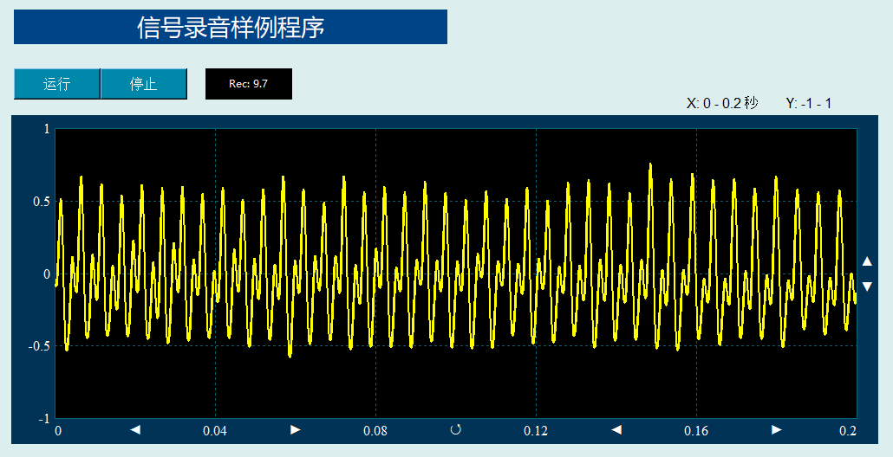

麦克风录音控件提供一个计算机麦克风录音模块，可以实时获取外部的声音信号，并时通过回调函数形式返回。用户可编程定义其具体后续显示和信号处理操作，其图形显示效果如下：

具体应用方法可参考软件包中的录音程序(DRVIExample_Recording)代码：

在Python程序GUI界面中创建一个麦克风录音控件的命令为:
hl=dr.DRRecorderX(win,x,y,w,h,cb,cf,Fs,BlockLen,Time_seconds,fsize)
其中hl是创建时用户设定的变量名。麦克风录音控件可以通过回调函数绑定的方式将采集的声音数据传递给绑定的回调函数，格式为：
hl.addCallBack2DX(setValue2DX)
被绑定的回调函数是一个二维曲线数组函数，收到的是当前信号的时间采样间隔和信号数组，其函数形式为：
def setValue2DX(self,dx,x):
通过回调函数绑定方式，就可以将采集的声音数据传递到回调函数中。
麦克风录音控件有1个属性函数，可用于启动/停止麦克风声音信号采集。
hl.setValueSingle(0/1)
.